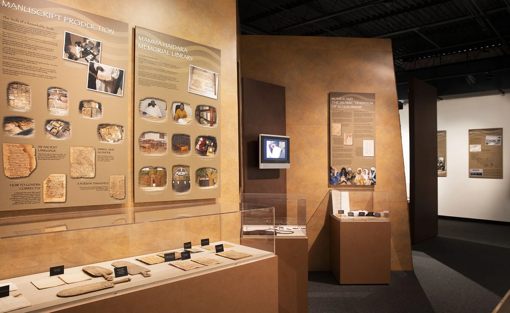

The Most Southern Place on Earth
Ten chapters of Delta history and knowledge, featuring local art, community leaders, and stories of resilience. The annual Most Southern Place on Earth workshops bring educators to the Mississippi Delta to learn more about the forces that have shaped it. This virtual magazine was built to ensure these stories and lessons continue to be told for years to come.
A Change Is Gonna Come
I was born by the river
In a little tent
Oh, and just like the river, I've been running
Ever since
It's been a long
A long time coming, but I know
A change is gon' come
Oh yes, it will
It's been too hard living
But I'm afraid to die
Cause I don't know what's up there
Beyond the sky
It's been a long time coming, but I know
A change is gon' come
— "A Change is Gonna Come" by Sam Cooke
"The Delta is more diverse, culturally rich, beautiful, impoverished, rural, vibrant, and complicated than I had imagined."
"This is my home, too."
"Heaven and earth so close, but still miles apart."
"Being able to humanize people as individuals — that's the thing that's grounding me, as well as just being able to be in the place and ground your lessons and work in place."
"The more I do this, the more places you visit and people you talk to at these programs — man, that stuff all carries through in the classroom..."
[A short letter from the workshop's director, framing why this issue exists and what changed since last year's — see "Welcome to the Delta" and "Preachin' the Blues" style openers in your prior issue for tone.]
Mandy Truman
Lee

I feel like you can only get so much from reading, to some degree. But until you're on the ground and living it, I think — like you said — it's deeper learning, and it just makes it more impactful. Workshop Participant, following Mound Bayou
I sometimes think I know the answers to things that are really complicated, and even though I think I understand history, just encountering how it shapes us as humans — it's just so complicated Workshop Participant, following Mound Bayou


Traveling through the Delta, visiting a bunch of the sites, has definitely given a lot of depth to things that I thought, or perceived, even with the understanding of what I've read and learned through history. But when you travel to some of those sites and see some of the places, it's almost as if the readings that we've done, some of the people that we've talked to, the music that we've listened to — it's almost as if that is flowing through you, like the Mississippi River is flowing through the Delta. Workshop Participant, reflecting on the week
Share thoughts about the Delta, post lingering questions, and leave feedback for the Delta Center — and read what others have said.
Speaker Information
The full week's schedule — speakers, site visits, and each day's listening playlist — from the NEH summer workshop.
Monday
My Home Is in the Delta — Muddy Waters (1964)
Mississippi River Blues — Big Bill Broonzy (1934)
High Water Everywhere — Charley Patton (1929)
Traveling Riverside Blues — Robert Johnson (1937)
- Welcome and Introductions: Dr. Mandy Truman and Lee Aylward provide introductions and discuss a shared commitment to regional research and community engagement.
- Workshop Overview: A discussion regarding the week ahead and the history to be examined, creating an understanding that this work is challenging, requires openness to questions, and encourages free expression.
- Grounded Geography of the Delta: A framing of the Delta as a cultural landscape where the physical environment—the river, the soil, and the plains—is inextricably linked to the music, faith, and social movements that grew from it. An examination of how this terrain has shaped, and been shaped by, the generations of people who have claimed it as home.
- Discussion on Hard History: A walkthrough of the difficult topics to be navigated all week long, ensuring preparedness to engage with the complex and often painful realities of the Delta's past.
- The Power of Narrative: A discussion on how stories are told, shifting from purely academic perspectives to ones that recognize the human, emotional, and lingering social impact of historical events.
- Engaging Multiple Perspectives: An examination of the different ways history is remembered, shared, and sometimes omitted, recognizing that hard history is a living part of the present day Delta subject to ongoing interpretation.
- LaLee's Kin: The Legacy of Cotton provides an intimate look at the multi-generational impact of poverty in the West Tallahatchie School District.
- An exploration of how the plantation system evolved into modern-day structural inequality, focusing on the cycle of educational underfunding and how the history of cotton continues to dictate the economic realities of Delta families today.
- Former Superintendent Reggie Barnes discusses his leadership in the West Tallahatchie School District during its most tumultuous years.
- Perspectives on the threat of state takeover, efforts to bridge the gap between community needs and rigid state policy, and the systemic hurdles faced while attempting to improve outcomes for a population that is 100% economically disadvantaged.
- The Mississippi River serves as the defining natural force of the Delta, acting as a powerful agent of both life and destruction that sustains the agricultural economy and serves as the primary artery for cultural exchange.
- Analysis of Robert Johnson's "Traveling Riverside Blues" to understand how he mapped the Delta's geography and spirit through his music.
- A pass by historic Chinese grocery stores to discuss how diverse waves of migration—including Chinese merchants and Mexican migrant workers—fundamentally transformed the social and culinary landscape, giving rise to local staples like the hot tamale.
- Exploring Pre-Plantation History: A visit to the Winterville Mounds, a major ceremonial center built between AD 1000 and 1450, to broaden understanding of the region. This site invites consideration of the sophisticated civilizations that thrived here long before the plantation era, challenging the narrative of an "empty wilderness."
- Engaging with Mississippian Culture: A walk through the grounds of this former chiefdom, observing the scale of the earthworks that served as centers for trade and communal life. A look at how this site functions as a tangible reminder of the complex societies that existed here centuries before European settlement.
- Reflecting on Tribal Heritage: A consideration of the connections between the people who built these mounds and contemporary nations like the Choctaw and Chickasaw. This stop provides a space to reflect on the long duration of human presence in the Delta, the impact of displacement, and the importance of stewardship of these sites today.
Tuesday
Gallis Pole — Lead Belly (1939)
Avalon Blues — Mississippi John Hurt (1928)
Smokestack Lightnin — Howlin' Wolf (1956)
Louisiana Blues — Muddy Waters (1950)
Oxford Town — Bob Dylan (1962)
- Bus departure from Jobe Hall to Greenville.
- A visit to the Old Chinese Cemetery and the African-American Pauper's Cemetery to observe the physical remnants of the Delta's diverse population and reflect on their distinct histories and burial practices.
- A visit to the historic Hebrew Union Congregation, established in 1906. This site serves as a space to consider how the Jewish community has maintained a presence in the Delta for over a century.
- This congregation remains an active, engaged participant in the broader Greenville community through ongoing outreach and fundraising efforts.
- The synagogue serves as an example of how small, distinct communities have adapted and persisted in the face of the unique isolation and challenges the Delta presents.
- Dr. Charles Regan Wilson, former director of the Center for the Study of Southern Culture at the University of Mississippi, discusses the influence of religion on Southern identity and the formation of community traditions.
- Insights from his extensive work on the Encyclopedia of Southern Culture help examine how regional traditions contribute to a broader understanding of the American South.
- A screening of Voices of the Sit-in, which documents the 1969 peaceful student protests at Delta State University.
- Maggie Crawford joins for a panel discussion, providing a firsthand account of the campus climate after the first Black students enrolled in 1966 and the experience of those who participated in or taught during this era.
- The discussion covers how these events at Delta State connect to the broader movement of Black student activism that swept across the South during the 1960s.
- Keith Johnson performs and discusses his work as a musician who carries forward the Delta blues legacy as the great-nephew of Muddy Waters.
- A listen to his work, including his 2024 single "Nephew Muddy," reflects on how family legacies and musical traditions are kept alive and transformed by new generations.
- The discussion of his career—spanning original music for television, digital media, and literature, such as his book Freeman: Opening the Case—serves as an example of how modern artists continue to tell the story of the Delta to a global audience.
Wednesday
Cross Road Blues — Robert Johnson (1936)
Death Letter Blues — Son House (1965)
Pony Blues — Clarley Patton (1929)
Canned Heat Blues — Tommy Johnson (1928)
Hard Time Killing Floor Blues — Skip James (1931)
Boom Boom — John Lee Hooker (1962)
Go Tell It on the Mountain — Fannie Lou Hamer (1963)
Why I Sing the Blues — B.B. King (1969)
Sweet Little Angel — B.B. King (1956)
- Dockery Plantation: A visit to this 25,600-acre plantation and sawmill, widely recognized as the birthplace of Delta blues. The site provides crucial context for how blues music emerged from the shared hardships of sharecropping, systemic segregation, and economic insecurity.
- The Crossroads: A stop at the legendary highway intersection associated with Robert Johnson's pact with the Devil, an iconic example of how blues history blends fact with folklore.
- Fannie Lou Hamer's Gravesite: A visit to honor the legacy of this pivotal civil rights and women's rights activist. The visit highlights her critical role in delivering supplies to the impoverished in the Delta and her enduring voice for justice in Mississippi.
- A visit to the museum in Indianola, the hometown of music icon Riley B. King.
- The museum details King's core philosophies of honesty, civility, compassion, and a strong work ethic, which guided his career and life.
- A lunch visit to the Blue Biscuit, recognized by Mississippi Magazine as one of the top five live music venues in the state.
- Mound Bayou: A visit to one of the nation's first all-African-American cities, founded in 1887. Recognized by President Theodore Roosevelt as the "Jewel of the Delta," the city stands as a historic symbol of Black self-determination and pride.
- Peter's Pottery: A visit to the studio operated by the Woods brothers, who create unique pottery and contribute directly to the local economy of Mound Bayou through sales tax benefits.
- Po' Monkey's Juke Joint: An observation of one of Mississippi's most famous juke joints, which served as the residence of the late Willie "Po' Monkey" Seaberry.
- Scott Barretta: A blues historian and Delta State University instructor who previously co-hosted the radio show Highway 61 discusses the history and cultural significance of the blues.
- Kwan Kash: A local artist and instrumentalist discusses his work as a songwriter and his craft of playing handmade instruments.
Thursday
Keep Your Eyes on the Prize — Alice Wine (1956)
Mississippi Goddam — Nina Simone (1964)
This Little Light of Mine — Fannie Lou Hamer (1963)
A Change is Gonna Come — Sam Cooke (1964)
Long Walk to DC — The Staple Singers (1968)
To Be Young, Gifted and Black — Nina Simone (1969)
Say It Loud – I'm Black and I'm Proud — James Brown (1968)
The Revolution Will Not Be Televised — Gil Scott-Heron (1971)
(Today's songs include movement anthems: the soundtrack of mass mobilization in the 60s & 70s)
- The Mississippi Freedom Trail marker commemorates the student activists featured in Tuesday's documentary, recognizing their peaceful 1969 protest at Delta State University.
- This memorial ensures the legacy of these students is permanently integrated into Mississippi's civil rights narrative, honoring their role in challenging institutional segregation and advocating for more inclusive academic spaces.
- Charles McLaurin, a recipient of the Fannie Lou Hamer Humanitarian Award, was a pivotal civil rights activist who launched SNCC's voter registration project in Sunflower County, notably by transporting residents to the Indianola courthouse to register.
- As a leader in the Sunflower County Freedom Project, he orchestrated strategic boycotts of local businesses to challenge systemic white political control.
- His methodology emphasized the power of visibility and persistent local organizing, even when facing severe intimidation tactics, discriminatory ballot access, and the entrenched power structures of the Jim Crow South.
- In 1955, 14-year-old Emmett Till was abducted and brutally murdered after being falsely accused of offending a white woman at a local grocery store.
- Despite clear evidence, his killers, J.W. Milam and Roy Bryant, were acquitted by an all-white jury. This miscarriage of justice served as a profound catalyst for the modern Civil Rights Movement, forcing the nation to confront the reality of racial terror in Mississippi.
- Bryant's Grocery: This site marks the location where the interaction occurred that led to Till's murder, serving as a solemn touchstone for the history of racial violence in the region.
- Robert Johnson's Gravesite: Robert Johnson, often mythologized for allegedly trading his soul for musical mastery, is recognized as the most influential pioneer of the Delta blues. His unique singing style and innovative guitar techniques fundamentally shaped the evolution of American music.
- The site features the only stand-alone statue of Emmett Till in the United States, a project supported by a $150,000 allocation to preserve the memory of the Civil Rights Movement.
- In 1966, the area—formerly known as Broad Street Historical Park—was the setting for a historic speech by Stokely Carmichael, who rallied the crowd with his call for "Black Power."
- Carmichael's speech represented a strategic shift in SNCC's focus, moving toward militant mobilization to dismantle the structures of "white power" that had long oppressed the Black community.
Friday
3 O'Clock Blues — B.B. King (1951)
That's All Right — Elvis Presley (1954)
Every Day I Have the Blues — B.B. King (1955)
Green Onions — Booker T. & the M.G's (1962)
- ★ The morning begins with a bus journey toward Memphis, including a drive through Clarksdale. This route provides a scenic overview of the Delta landscape that served as the "Birthplace of the Blues," home to legends like Muddy Waters and John Lee Hooker.
- ★ Please note that this session is a drive-through experience; there are no scheduled stops in Clarksdale during this time.
- Cotton served as a primary influence on the development of the first international economy, remaining central to global trade and labor systems in the South. This economic engine was built upon the exploitation of enslaved labor and, subsequently, the sharecropping system.
- The Memphis Cotton Exchange once facilitated these vast international transactions; previously an exclusive space for the elite, it is now open to the public to provide historical perspective on this complex industry.
- The Stax Museum is the world's only institution dedicated exclusively to the legacy of Stax Records and the history of American soul music.
- The museum's extensive exhibits honor the artists who recorded there, showcasing over 2,000 items of music memorabilia that document the profound impact of soul music on American culture.
- Housed at the site of the Lorraine Motel—where Dr. Martin Luther King Jr. was assassinated in 1968—this museum is dedicated to preserving the legacy of the American civil rights movement and inspiring ongoing social action.
- The collection features 260 artifacts and over 40 multimedia installations, including historical films and oral histories that document the movement's evolution and challenges.
- Opened in 1869, the Peabody Hotel quickly established itself as the premier social and business hub of Memphis, Tennessee.
- The hotel is famously known for the "March of the Peabody Ducks," a tradition dating back to 1933 when ducks were first introduced to the hotel's lobby fountain.
Saturday
My Home Is in the Delta — Muddy Waters (1964)
Mississippi River Blues — Big Bill Broonzy (1934)
High Water Everywhere — Charley Patton (1929)
Traveling Riverside Blues — Robert Johnson (1937)
- Dr. John Strait discusses the phenomenon of the Delta Diaspora, examining the historical and socioeconomic factors that led to the mass migration of residents out of the region. This session highlights how these demographic shifts transformed not only the Delta's own social fabric but also the cultural and political landscape of the cities and regions where these populations resettled. See the full slide deck from this session in Chapter IV — Immigrants.
- A practical session focused on pedagogical application. Participants share reflections on how the place-based learning methods used throughout the week can be adapted to their K-12 classrooms. This session emphasizes moving beyond traditional textbooks to incorporate oral histories, site visits, and primary source engagement.
- A final gathering to formally conclude the workshop. Participants reflect on their personal transformations throughout the week and the lasting impact of their engagement with the Delta's landscapes and its people.
Mississippi
The flood that made the land, the crop that ran the economy, and the lines — drawn by rivers and by lenders — that still shape where people live.
Heaven and earth so close, but still miles apart.
The Delta is not a delta in the geological sense — it's a floodplain, built up over centuries by the Mississippi River's habit of overflowing and depositing rich alluvial soil. The fields of corn in perfect rows often relegated to housing on the low flood plains were more than watering devices — they were structural to the region's economy, as a result of enslaved peoples' labor, as it built up over 1927. [Continue: how the 1927 flood's destruction did not subside affected African Americans disproportionately, "more than half a million were black," of the 640,000 people displaced.]
Cultural geography
River access itself is unevenly distributed: much of the riverfront is privately owned via country clubs and hunt clubs that charge $500 to $3,000 per year, or $2 to $3 per day, to hunt land that once put enslaved and tenant labor to work without pay. [Continue: redlining, postwar lending patterns, and how the plantation-era land pattern still governs where schools, clinics, and grocery stores sit today.]
"When I see the Delta, I see my ancestors on these cotton rows, picking cotton. And I see my ancestors not being paid."Participant
The Sanctuary — faces of Mound Bayou
A sanctuary is a place where Black people could go to church, to a store, to school — you can't go to that: all of it was ours to go to, as much as it existed here. Founded in 1887, Mound Bayou was one of the first and largest all-Black towns in the U.S.
The global economy and cotton crashes
By the 1930s, Mississippi's cotton monoculture was already vulnerable to national and global price swings; mechanization after 1947 then eliminated most sharecropping jobs within two decades, driving the Great Migration out of the Delta. [Continue with modern context: today cotton ranks behind poultry and forestry among the state's leading agricultural sectors.]

Education & the Effects of Isolation
What it means to grow up in a place where the nearest school, and the nearest way out, can be an hour's drive.
If you don't own land, there's no way you can have generational wealth — only generational poverty.
Poor education continues this vicious cycle of invisible oppressors and exploited workers. Some workshop participants felt that the Tallahatchie school system's isolated location, real or noted, "invisible poverty," left many remaining opportunities and resources to opportunities left to deal with the effects of a broken system.
[Section: reference "Lalee's Kin: The Legacy of Slavery," the documentary following a Delta grandmother and her grandchildren through the Tallahatchie school system, as a touchstone for how little the isolation has changed since its 2001 release.]
Healthcare, Historical and Modern
Life expectancy, maternal health, and the coalitions trying to close the gap in one of the hardest-served regions in the country.
Mississippi has the nation's highest infant mortality rate and the shortest life expectancy — and within the state, the Delta fares worse still.
Teenage pregnancy & infant mortality
[Section: Delta-specific teen birth rate data — pull the latest county figures from MSDH / March of Dimes PeriStats — paired with prenatal care access and the region's "maternity care deserts."]
Coalition building
Immigrants in the Delta
Delta immigrant culture was marked by tenacity, resilience, and cultural roots mixing with Southern Tradition.
Assimilation was never simple. Under Jim Crow's binary racial order, Chinese families were classified as neither Black nor white, and the 1927 Gong Lum v. Rice case deepened this divide. The 1927 Gong Lum v. Rice Supreme Court Case ruled that a Mississippi school board had not violated the 14th Amendment by forcing a Chinese American student to attend a "colored" school. This decision led "separate but equal" to apply to all non-white students. The community of Chinese Americans transitioned to opening small, family-run grocery stores that supported the Black community. They offered critical supplies and credit when white-owned establishments in the Delta refused. Until the turn of the new century, Chinese-owned grocery stores were found all throughout the Delta, especially as schools exclusviely for Chinese students closed and they could attend White schools. The Delta Chinese community was one of the largest Chinese American communities, but many have left for larger cities, primarily to pursue higher education.


"Nobody is here anymore — I'm the only one in my family that's still here. It's kind of sad, because used to, every little town between Vicksburg and Memphis had a Chinese grocery — maybe two or three or four."Kathy Wong, Hollandale, Mississippi
The Delta Diaspora
The Delta's story of migration runs in both directions: as much as newcomers settled in the region, generations of Deltans — Black and white — left it, carrying the Delta's culture with them to Chicago, Detroit, and cities across the country. Dr. John Strait's lecture on the Delta Diaspora, delivered during the workshop, traces that outward movement and its lasting reach.


Other Faiths in the Delta
Beyond the Baptist and Methodist churches that anchor most Delta towns, smaller congregations hold their own ground.
Long before the Delta's story was framed only in Black and white, Jewish merchants, Muslim professionals, and Italian Catholic laborers were building congregations, businesses, and community ties of their own — threads of the region's history still being pulled forward today.

Islamic Society of Delta Mississippi


Delta Jews and Synagogue
.jpeg)
Italian Delta Community
Delta Blues
Po' Monkey's, B.B. King, and the music the Delta gave the world.
The blues grew out of the same fields and churches this issue has already covered — a music of labor, migration, and survival that turned the Delta into "the Birthplace of America's Music."
Emmett Till
First-hand stories told with first-hand accounts. What does it mean to be a storyteller of history?
In August 1955, 14-year-old Emmett Till was abducted from his great-uncle's home in Money and murdered; the two men tried for his killing were acquitted that September by an all-white jury in Sumner, after the jury deliberated just over an hour. One of the men later confessed to the murder in a magazine interview, protected by double jeopardy. The case galvanized national and international attention and sparked the American civil rights movement.
Other museums & panel discussion
[Section: material from other museums covering the Till case, plus interviews or notes gathered from a panel discussion — cite each institution and speaker, and don't reproduce exhibit or marker text verbatim.]
Civil Rights
Freedom Trail figures, the Freedom Riders, the history of Parchman Farm, and what's changed — and hasn't — since. Many heroes of the movement still live. Is history that far gone?
Events reflecting the past and present of racial challenges, seen through news clippings and archives.
Freedom Trail figures
The Mississippi Freedom Trail honors organizers and leaders whose work reached directly into the Delta. A starting list for this issue:
Freedom Riders & the history of the penitentiary
In 1961, dozens of Freedom Riders arrested in Jackson were transferred to Mississippi State Penitentiary at Parchman — the same prison farm where folklorist Alan Lomax had recorded blues musicians decades earlier. Parchman carries a dual legacy: a working plantation-prison, and a site of civil rights resistance. This chapter's Freedom Trail figures — Fannie Lou Hamer (Ruleville), Amzie Moore, Stokely Carmichael, T.R.M. Howard (Mound Bayou), and Aaron Henry — are joined below by two more voices central to this story.
Charles McLaurin
Maggie Crawford
Modern day update
[Section: contemporary conditions at Parchman — recent state and federal scrutiny of conditions — and present-day voting rights, representation, and organizing in the Delta. Keep this section fact-checked and current at time of publication.]
[Local organizer or historian quote on what commemoration has and hasn't changed.]Name, role
Delta Coverage in Media
From "Sinners" to decades of photojournalism — how outside storytellers have framed the Delta, and what locals make of it.
2025's "Sinners," directed by Ryan Coogler and set in 1930s Clarksdale, put the Delta back in front of a global audience — reviving old questions about who profits when the region's history becomes entertainment.
[Section: summarize — in your own words, never quoted at length — press interviews in which Ryan Coogler discussed the film's Delta setting and research process. Link out to the original interviews rather than reproducing them.]
The Importance of Commemoration
"For 50 years, I didn't say anything to anyone," Lula Orsby-Jones said. She felt her story wasn't important enough to be told. What is the value of commemoration for the storytellers of history?
The museum is built for consumption. Its whole purpose is to be a publicly available space of education and commemorative power. Every day, people walk the entire length of a museum, taking in the stories being told in a variety of ways: the stories line the walls — and are also commemorated in a deeper, more atmospheric sense, in how the museum came to be there.
Commemoration as healing
In 2009, the records of the 1969 Delta State sit-in, "one of Delta State's most important insight into commemoration: its ability to heal," conducted by asking students questions about their families and connecting them to storytellers directly affects how the stories come to be presented in each exhibit. Who were the storytellers, and what did it take for them to share their stories?
"The Delta State never said anything about it. For 50 years, I didn't say anything to anyone."Lula Orsby-Jones, participant in the 1969 Delta State sit-in
The importance of listening
[Section: how blues and civil rights tourism has revived some downtowns while barely touching others — and how residents describe the gap between the story told to visitors and the one they live. Balance the economic-development case with critiques from Delta-based advocates about who profits and who tells the story.]
Why we do the workshop
[A closing statement — from the director or the group collectively — on the purpose of the workshop and this publication.]
Acknowledgements & meet the team


Poetry, part two
Praise From Participants
[Closing participant quote — what the workshop meant to them.]Participant
[Second closing participant quote.]Participant